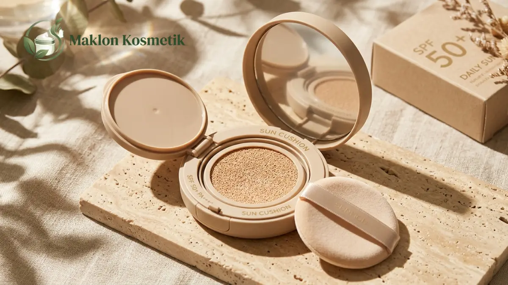
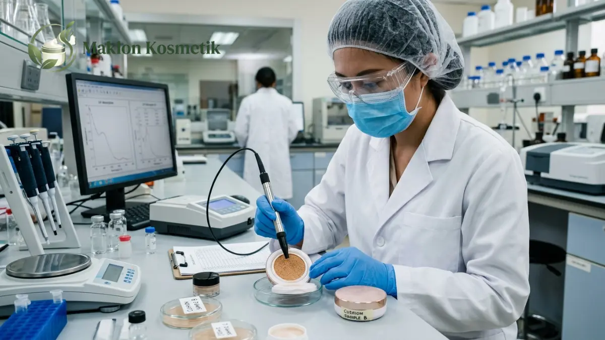

Inovasi Hybrid Makeup: Cushion + Sunscreen SPF 50 Paling Dicari

Daftar Isi Artikel Buka/Tutup
- Apa Itu Hybrid Makeup Cushion dengan Sunscreen SPF 50?
- Apa Arti SPF 50 dan Label PA pada Produk Cushion?
- Mengapa Produk Hybrid Cushion Sunscreen Banyak Diminati?
- Apa Tantangan Formulasi Cushion dengan SPF 50?
- Bagaimana Klaim SPF 50 Diuji dan Dikelola Secara Bertanggung Jawab?
- Bagaimana Proses Maklon Produk Hybrid Cushion Sunscreen?
- Bagaimana Brand Membedakan Produk Hybrid di Pasar yang Ramai?
- Pertanyaan Umum (FAQ)
Ringkasan Poin Inti
- Hybrid cushion sunscreen menyatukan fungsi alas bedak penutup noda dengan filter proteksi UV dalam satu kemasan ringkas.
- SPF 50 memberikan proteksi maksimal terhadap paparan sinar UVB, sementara rating PA menjaga kulit dari penuaan dini UVA.
- Tantangan formulasi bertumpu pada pencegahan white cast, stabilitas spons bantalan, dan hasil akhir ringan bebas kilap.
- Klaim angka SPF wajib dibuktikan dengan laporan hasil uji laboratorium terakreditasi sebelum didaftarkan ke BPOM.
Apa Itu Hybrid Makeup Cushion dengan Sunscreen SPF 50?
Hybrid makeup cushion dengan sunscreen SPF 50 adalah terobosan kosmetik dua fungsi yang menggabungkan alas bedak cair berpigmen dengan filter tabir surya berdaya lindung tinggi.
Formula emulsi cair diserap ke dalam bantalan spons berpori mikro khusus dan diaplikasikan memakai puff antibakteri. Bentuknya yang ringkas memangkas tahapan riasan pagi menjadi jauh lebih cepat dan praktis.
Bagi konsumen urban modern, produk multifungsi ini menjadi solusi cerdas meratakan warna kulit seketika sembari memberikan perisai tangkal paparan radiasi ultraviolet di luar ruangan.
Meskipun memberikan perlindungan ganda, edukasi pembersihan wajah tetap penting. Pengguna tetap disarankan melakukan teknik pembersihan ganda (double cleansing) saat malam hari agar pori-pori kulit tetap bernapas lega.
Apa Arti SPF 50 dan Label PA pada Produk Cushion?
Angka SPF (Sun Protection Factor) 50 menunjukkan tolok ukur kemampuan produk dalam menahan radiasi sinar UVB penyebab kulit terbakar matahari dan hiperpigmentasi noda hitam.
Di sisi lain, peringkat PA++++ mengukur efektivitas perisai terhadap radiasi sinar UVA yang mampu menembus lapisan kaca dan mempercepat penuaan dini kulit (photoaging).
Produk berkualitas tinggi wajib menyajikan perlindungan spektrum luas (broad spectrum). Perlindungan menyeluruh ini menjamin kulit terlindungi optimal baik dari panas membakar maupun degradasi kolagen.
Perlu diedukasikan kepada konsumen bahwa pengujian lab menggunakan takaran baku yang cukup tebal. Karena cushion diaplikasikan tipis, touch-up berkala dianjurkan bagi yang beraktivitas di bawah terik matahari seharian.

Mengapa Produk Hybrid Cushion Sunscreen Banyak Diminati?
Tingginya indeks sinar UV di negara tropis seperti Indonesia mendorong peningkatan kesadaran masyarakat akan pentingnya tabir surya setiap hari tanpa rasa lengket.
Konsumen menginginkan riasan yang tidak terasa tebal seperti dempul namun tetap sanggup menyamarkan bekas jerawat. Format cushion menawarkan hasil akhir semi-matte alami yang segar tahan luntur.
Kemudahan mengaplikasikan ulang (reapply) di kantor atau saat bepergian tanpa merusak riasan sebelumnya menjadi nilai jual utama yang mendorong angka pembelian ulang sangat tinggi.
"Kekuatan produk hybrid terletak pada kemampuannya menyederhanakan rutinitas kecantikan tanpa mengorbankan perlindungan esensial kulit dari kerusakan sinar matahari."
Apa Tantangan Formulasi Cushion dengan SPF 50?
Menyusun formula cushion SPF 50 menuntut keahlian R&D kimia kosmetik tingkat lanjut. Filter tabir surya mineral seperti titanium dioxide sering meninggalkan lapisan residu keputihan (white cast) di kulit sawo matang.
Formulator harus merancang teknik dispersi mikronisasi pigmen agar warna cushion membaur mulus tanpa menimbulkan kesan belang saat terkena cahaya lampu kamera.
Tantangan kestabilan fisik emulsi di dalam bantalan spons juga sangat krusial. Emulsi harus dirancang agar cairan tidak memisah, tidak menyumbat pori spons, dan tidak menguap saat wadah sering dibuka.
Pengujian siklus suhu ekstrem (freeze-thaw cycle test) wajib dilakukan di pabrik maklon guna memastikan cairan cushion tetap homogen selama pengiriman ke berbagai pelosok nusantara.
Bagaimana Klaim SPF 50 Diuji dan Dikelola Secara Bertanggung Jawab?
Badan POM melarang keras pencantuman nilai proteksi tabir surya yang hanya didasarkan pada perkiraan matematis formulasi bahan mentah di atas kertas.
Klaim angka SPF 50 wajib dibuktikan melalui protokol pengujian laboratorium terakreditasi ISO, baik melalui metode in vitro spektrofotometri maupun uji klinis panelis in vivo.
Hasil sertifikat uji laboratorium tersebut menjadi berkas wajib saat mengajukan permohonan nomor notifikasi izin edar resmi di sistem e-BPOM kosmetik nasional.
Komunikasi pemasaran yang transparan dan mencantumkan petunjuk pemakaian secara jujur akan membangun loyalitas jangka panjang serta menghindari penalti pengawasan regulasi.
Bagaimana Proses Maklon Produk Hybrid Cushion Sunscreen?
Alur maklon diawali dengan menentukan konsep coverage (sheer, medium, atau full), pilihan varian shade warna kulit lokal, serta hasil akhir dewy segar atau matte terkontrol.
Tim formulator pabrik akan menyiapkan sampel tester lab untuk diuji performanya di atas berbagai warna kulit wanita Indonesia. Penyesuaian tekstur dilakukan hingga formulanya sempurna.
Pemilihan wadah wadah compact cushion kedap udara dengan bantalan spons berkualitas tinggi menjadi faktor penentu agar cairan tidak lekas mengering di tangan konsumen.
Setelah formula disetujui, pabrik berstandar CPKB Golongan A akan memproduksi massal, melakukan pengisian steril, serta menyematkan segel foil pelindung sebelum pengemasan dus akhir.
Bagaimana Brand Membedakan Produk Hybrid di Pasar yang Ramai?
Pembeda utama di pasar yang kompetitif adalah penyediaan rentang warna (shade range) yang inklusif untuk warna undertone kuning langsat, netral, hingga sawo matang khas Indonesia.
Brand juga dapat memperkaya formula dengan bahan aktif perawatan kulit (skincare-infused) seperti ceramide, centella asiatica, atau niacinamide pencerah wajah.
Kombinasi antara perlindungan tabir surya yang teruji klinis dan keunggulan formula ramah kulit sensitif akan menjadikan cushion Anda primadona baru di industri kecantikan lokal.
Ingin Menciptakan Produk Cushion Sunscreen SPF 50 Brand Sendiri?
Wujudkan produk inovasi hybrid makeup dengan formula eksklusif bebas white cast, uji lab resmi BPOM, dan kemasan premium berstandar CPKB.
Pertanyaan Umum (FAQ)
.webp)
Mega Anggun (Ega)
Praktisi & Konsultan Formulasi Kosmetik di Maklon Kosmetik ID. Berpengalaman mendampingi ratusan brand owner merintis produk kecantikan berstandar BPOM & Halal.